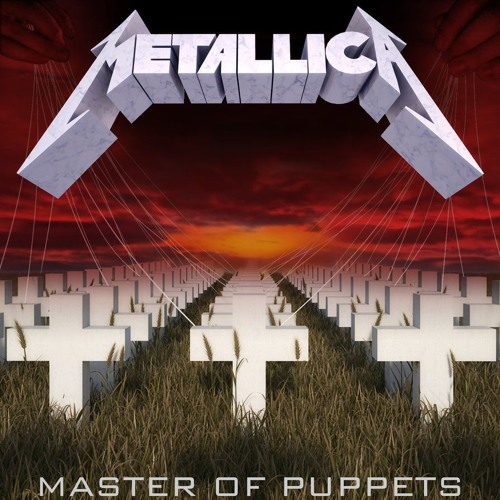
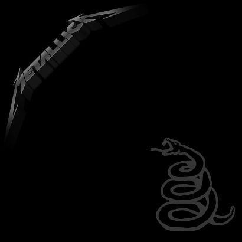
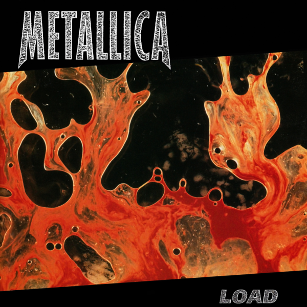
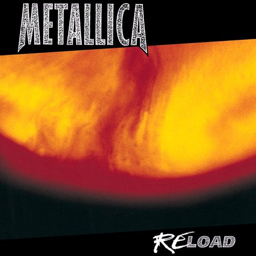
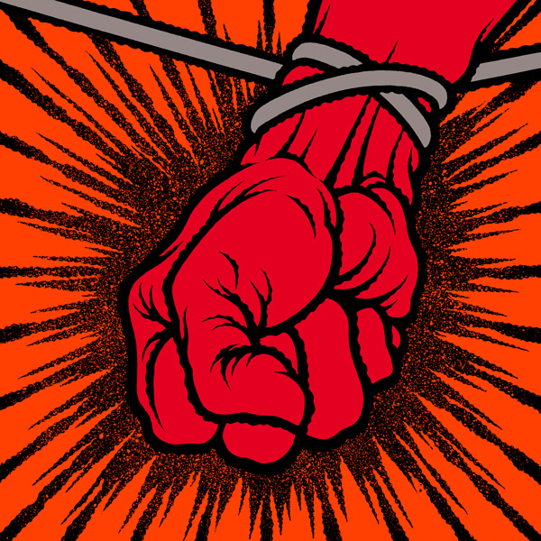
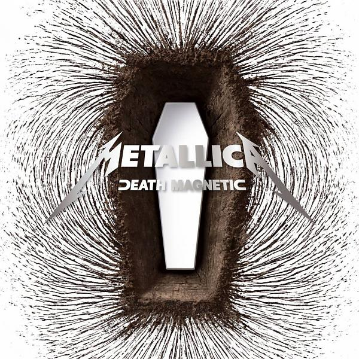
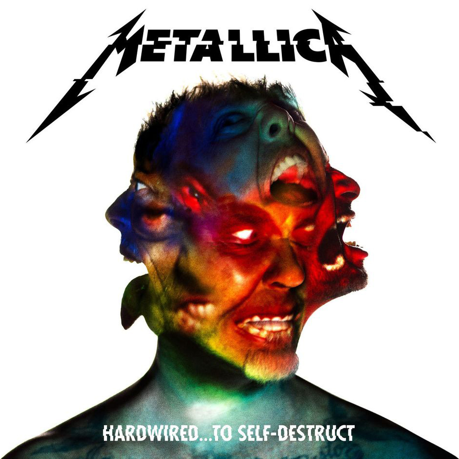

Дискография группы Metallica

Kill 'Em All
Kill ’Em All — дебютный студийный альбом американской метал-группы Metallica, выпущенный 25 июля 1983 года на независимом лейбле Megaforce Records. Kill 'Em All считается новаторской записью в жанре трэш-метал, благодаря своему звучанию, которое является комбинацией риффов британского хэви-метала и высокой скорости американского хардкора. Тематическое содержание и музыкальная подача материала пластинки существенно отличались от мейнстримовой рок-музыки начала 1980-х годов, впоследствии превратив лонгплей в источник вдохновения для будущих исполнителей жанра.
Ride The Lightning
Ride the Lightning — второй студийный альбом трэш-метал группы Metallica. Хотя в плане звучания альбом опирался на традиции трэш-метала, он также продемонстрировал творческий рост группы и разнообразие музыкального материала. Частично этому способствовал опыт бас-гитариста Клиффа Бёртона, который имел классическое музыкальное образование и в этот раз принимал большее участие в написании песен. При этом музыканты не делали основной упор на скорости мелодий, группа стремилась развить звучание, добавляя акустические гитары, глубокие инструментальные пассажи и более сложные музыкальные гармонии. Кроме того, это последний альбом Metallica, содержащий песни за авторством бывшего гитариста группы Дэйва Мастейна.

Master of Puppets
Master of Puppets — третий студийный альбом американской трэш-метал-группы Metallica. Master of Puppets — последний альбом группы, в записи которого принимал участие бас-гитарист Клифф Бёртон, трагически погибший во время гастролей музыкантов в Швеции. Лонгплей считается краеугольной работой группы в 1980-х и одним из самых влиятельных альбомов хэви-метала. Критики называют его выход одной из причин общего роста интереса публики к этому направлению. По ходу записи пластинки группа много экспериментировала и использовала опыт и наработки предыдущих двух дисков, музыканты совершенствовали и индивидуальное мастерство. Впоследствии группа отказалась от агрессивного промоушена альбома, сделав ставку на интенсивное многомесячное турне, в американской части которого выступала в частности на разогреве у Оззи Осборна.
...And Justice For All
…And Justice for All — четвёртый студийный альбом американской трэш-метал-группы Metallica. Это был первый полноформатный альбом группы, в записи которого участвовал бас-гитарист Джейсон Ньюстед, сменивший трагически погибшего в 1986 году Клиффа Бёртона. Музыкальное содержание альбома представляет собой материал с более прогрессивной структурой, базирующийся на длинных и сложных мелодиях композиций, исполненных в быстром темпе и содержащих небольшое количество классических куплетных форм, нежели в двух предыдущих. Лейтмотив альбома объединён единой концептуальной основой, базирующейся на теме политической и правовой несправедливости, которая формируется благодаря сюжетам отдельных песен: войне, цензуре и ядерному противостоянию.

The Black Album
Metallica — пятый студийный альбом одноимённой американской метал-группы, также известный как The Black Album. Это первый альбом группы, записанный с продюсером Бобом Роком, который пришёл на смену Флеммингу Расмуссену, занимавшемуся созданием трёх предыдущих дисков коллектива. Рок подталкивал группу к музыкальным экспериментам, за счёт чего звучание Metallica разительно отличалось от четырёх предыдущих альбомов — песни стали медленнее и короче. Metallica считается одним из самых влиятельных альбомов в истории метала, а также в дискографии самой группы, «не уступающим даже Master of Puppets. В 1992 году диск стал лауреатом премии «Грэмми» за «Лучшее метал-исполнение», опередив записи Anthrax, Megadeth, Motörhead и Soundgarden.

Load
Load — шестой студийный альбом американской метал-группы Metallica, выход которого состоялся в июне 1996 года на лейбле Elektra Records в Соединенных Штатах и на Vertigo Records международно. Выход альбома Load ознаменовал собой отход от стиля трэш-метал в сторону хард-рока, что сильно разочаровало некоторых поклонников группы. Load получил неоднозначные отзывы от критиков, но имел коммерческий успех, дебютировав на первом месте американского чарта Billboard 200. За первую неделю было продано 680 000 копий, что сделало альбом самым успешным дебютом 1996 года. На альбоме практически отсутствуют элементы трэш-метала — стиля, которого группа придерживалась на всех своих предыдущих альбомах. Вместо этого на альбоме представлены композиции жанров хард-рок, хеви-метал и даже блюз-рок.

Reload
ReLoad — седьмой студийный альбом американской метал-группы Metallica, вышедший в 1997 году. По утверждению самих членов группы, ReLoad вовсе не новый альбом, а всего лишь вторая часть выпущенного годом ранее альбома Load. Все песни для обоих альбомов (за исключением песни «The Unforgiven II») были написаны в одно и то же время — с конца 1994 до первой половины 1995 гг. Первоначально группа планировала выпустить эти песни двойным альбомом, но по разным причинам от этой идеи пришлось отказаться. Однако несмотря на это, по мнению многих поклонников группы, «ReLoad» получился более экспериментальным и разнообразным. Обложка альбома является работой художника Андреса Серрано (его работа также использовалась и на предыдущем альбоме).

St. Anger
St. Anger — восьмой студийный альбом американской рок-группы Metallica, выпущенный 5 июня 2003 года. Последний релиз группы, выпущенный на лейблах Elektra и Vertigo Records. Также последний релиз, который продюсировал Боб Рок, чья работа с Metallica начиналась с пятого одноимённого студийного альбома. Записи альбома предшествовал уход басиста Джейсона Ньюстеда и курс реабилитации Джеймса Хетфилда, после которого он работал в группе по четыре часа в день. Музыкальный стиль альбома St. Anger сильно отличается от предыдущих альбомов Metallica, в связи со «стальным» звучанием ударных, пониженным гитарным строем на 2 тона и отсутствием гитарных соло, а также сырым звучанием альбома в целом. St. Anger получил смешанные отзывы от критиков.

Death Magnetic
Death Magnetic — девятый студийный альбом американской группы Metallica. Он стал первой полноценной студийной работой нового бас-гитариста Роберта Трухильо. Продюсером выступил Рик Рубин. Альбом стал первым в своём роде в истории группы, когда каждый из её членов участвовал в написании песен или создавал свою. Также именно в Death Magnetic впервые, после ...And Justice for All, была включена инструментальная композиция (Suicide & Redemption). Кроме того, это первый альбом после «черного», в оформлении обложки которого Metallica использовала свой прежний логотип. В стремлении воссоздать классическое звучание, Metallica вернулась к настройке гитар А-440, которой пользовалась до 1991 года. Также группа вернулась к своему традиционному многослойному звучанию с продолжительными гитарными соло, напоминая ...And Justice for All, отказавшись от концепции построения песен из St. Anger.
